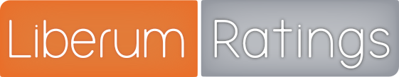
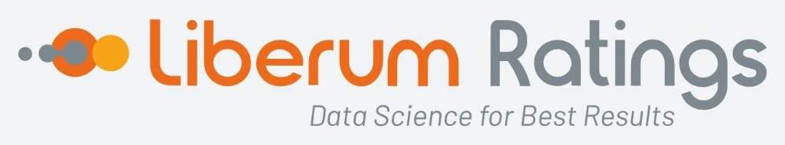
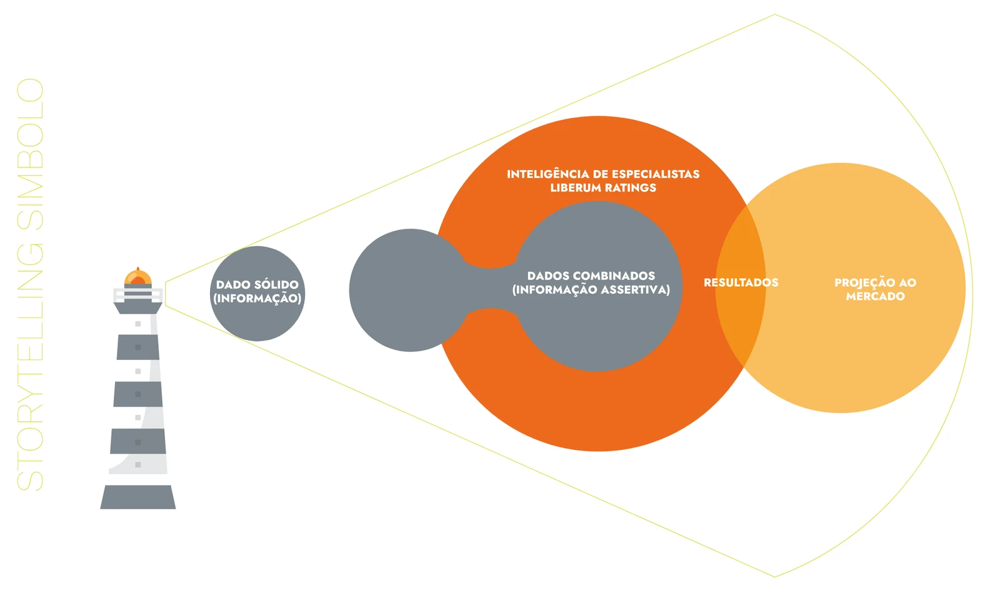
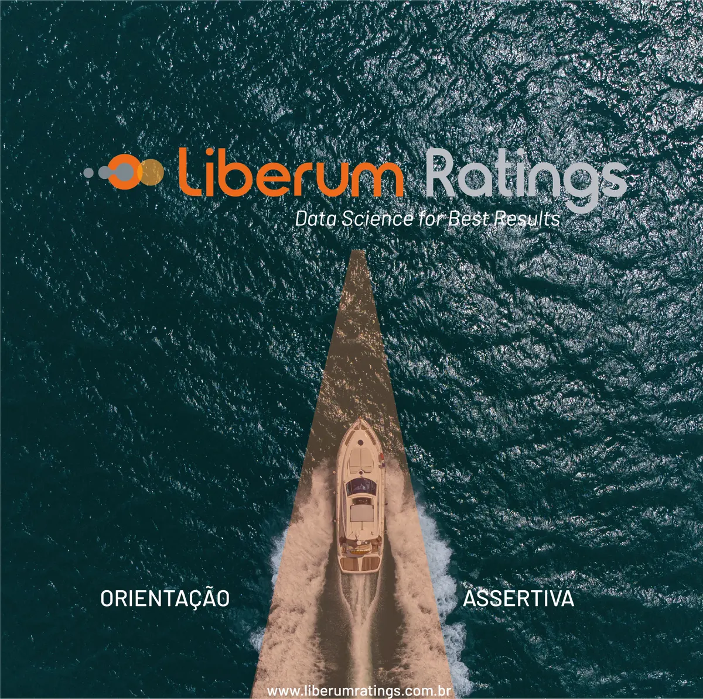
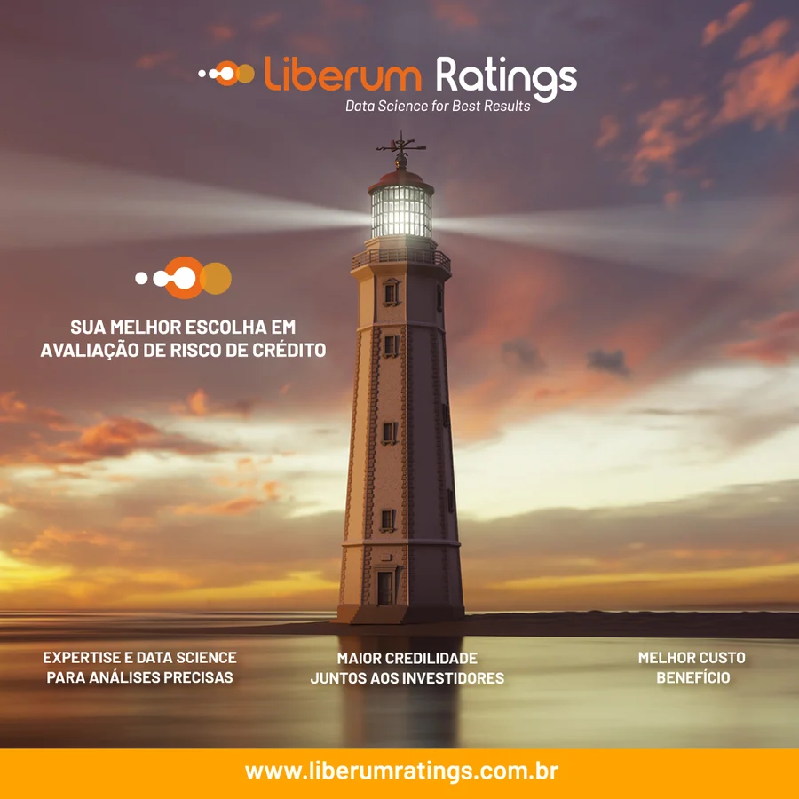
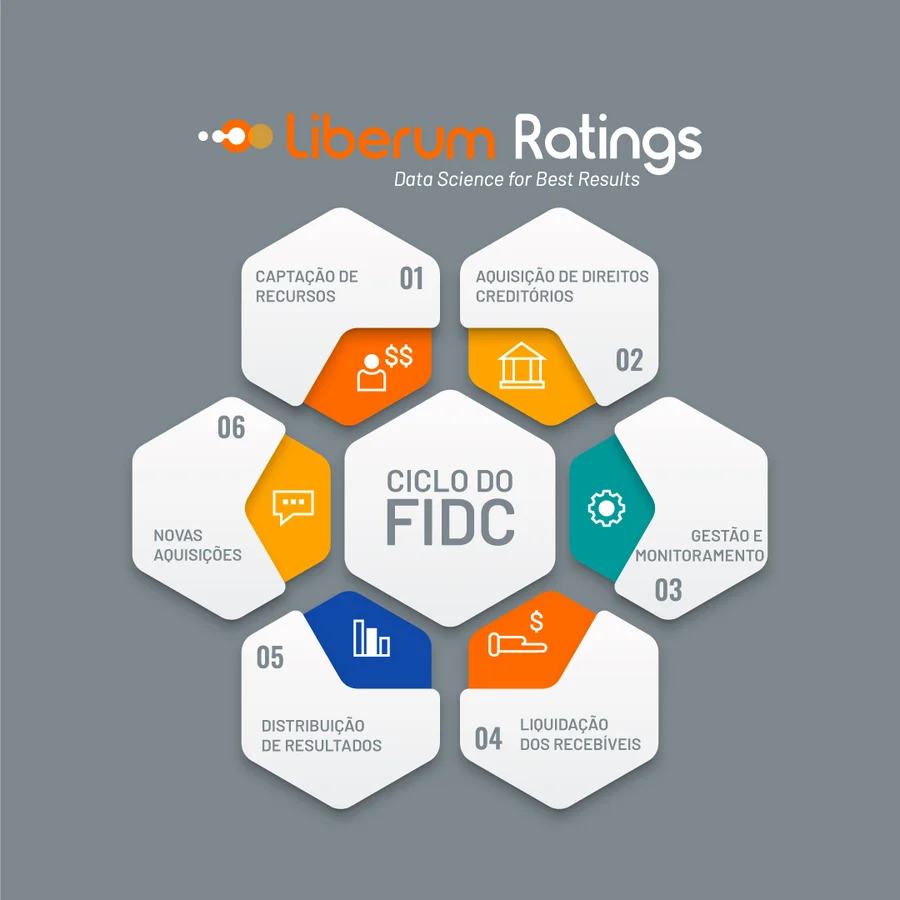
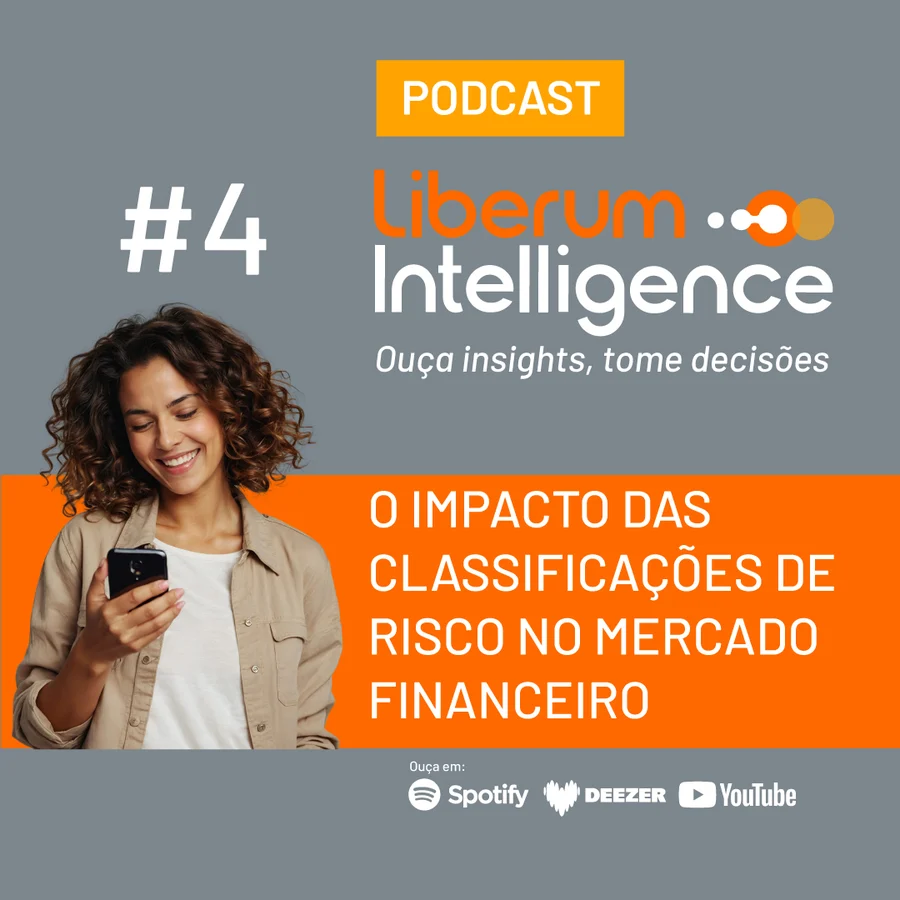
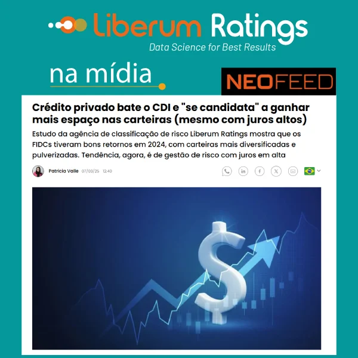
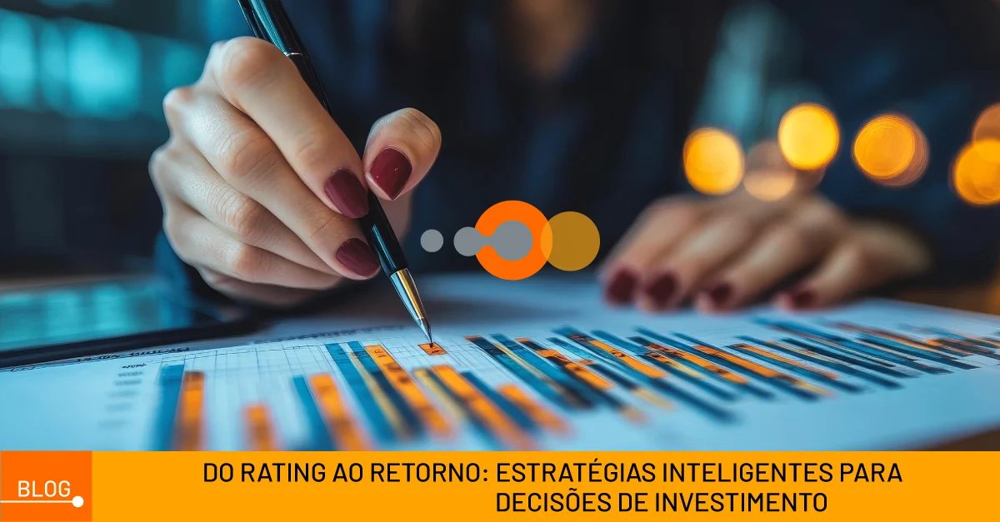
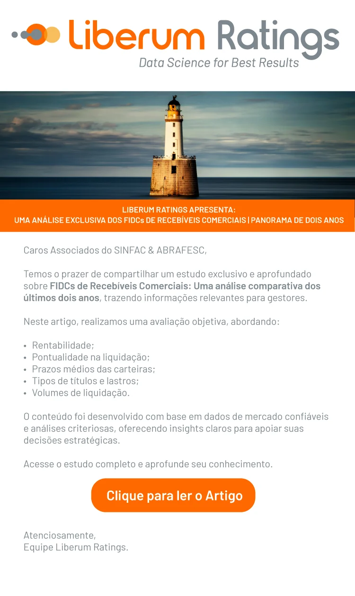

Liberum Ratings
Uma das maiores agências de avaliação de risco de crédito do país, reposicionada com marca, negócio e comunicação alinhados. Parceria desde 2022, com o rebranding em 2023 e a gestão da marca nos anos seguintes.
Desafio
Uma das maiores agências de avaliação de risco de crédito do país precisava de reposicionamento. A marca era fragmentada e sem identidade proprietária, abaixo do papel que a Liberum ocupa no mercado, e a comunicação não sustentava essa presença no dia a dia.
Uma pesquisa de percepção, com visão externa, mostrou o que a marca anterior não conseguia comunicar. Cada ponto virou um desafio para a nova identidade.


- 01
Uma marca chamada Liberum precisava parecer livre
Os retângulos encapsulavam o nome. A nova marca sai da caixa e se apoia no símbolo do farol.
- 02
Expressar liberdade e independência
O feixe de luz traz direção e abertura, os atributos que o nome promete.
- 03
Ganhar leitura e presença
A letra fina e apagada dá lugar a um logotipo de traço firme, legível em qualquer tamanho.
- 04
Deixar claro o que a Liberum entrega
A tagline Data Science for Best Results e a plataforma de marca dão foco ao posicionamento.
Fonte: pesquisa de percepção da marca, visão externa.
Estratégia
Alinhamos marca, negócio e comunicação em um trabalho consistente, do zero à entrega. A plataforma de marca posicionou a Liberum no arquétipo do Sábio, com valores como independência, transparência e dever de fidúcia, e definiu a linguagem que passou a orientar todos os pontos de contato.
Capacitamos pessoas e organizações a tomar decisões assertivas, baseadas em Data Science.
Criação
Nova identidade visual construída sobre o storytelling do símbolo: o farol que transforma dado em informação assertiva, gera resultados e projeta a Liberum ao mercado.


Comunicação
Depois do rebranding, assumimos a comunicação da marca. Ativamos a nova identidade com campanha orgânica e impulsionada, implantamos o Instagram e passamos a administrar as redes, com três perfis no LinkedIn: o institucional e dois executivos.
Criamos o Liberum Intelligence, o podcast da marca: nasceu em áudio e evoluiu para videocast com entrevistas. Editamos duas newsletters mensais, Entregas Mensais e Indicadores & Insights, e fizemos e-mail marketing com notícias e artigos relevantes para a base. Criamos os artigos do blog, com SEO, e o guia digital de FIDCs. Nos eventos do setor, cada participação tinha planejamento de antes, durante e depois, com divulgação da ação.
Comunicação na prática






O que entregamos
Mais do que uma identidade: a marca passou a ser gerida no dia a dia, em todos os pontos de contato.
Marca e base
- Rebranding e enxoval gráfico
- Textos e ilustrações do novo site
- Apresentações e documentos no DNA da marca
Campanhas e mídia
- Campanha de ativação da nova marca
- Campanhas para SINFAC e ABRAFESC
- Mídia paga no Google e no YouTube
Redes sociais
- Implantação do Instagram
- Administração diária das redes
- Três perfis no LinkedIn
Conteúdo e relacionamento
- Liberum Intelligence: podcast e videocast
- Newsletters Entregas Mensais e Indicadores & Insights
- E-mail marketing com notícias e artigos
- Artigos para o blog com SEO e guia de FIDCs
Vídeo
- Vídeo institucional: roteiro e produção
- Vídeos de fim de ano
- Edição ao vivo nos eventos
Eventos e relacionamento
- Planejamento de antes, durante e depois
- Divulgação da participação nos eventos
- Peças para feiras, simpósios e troféu Liberum Intelligence
- Apresentações para CERC e jornalistas